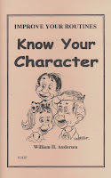

Creating a character tips
2/21/2009
From Mike: I am practicing everyday to master the art of ventriloquism. I'm now studying lesson 3 (Maher Ventriloquist Course) so you can see I take my time on the lessons :) I also repeat a lot just as the books suggest. The only hard part for me is to create another voice and a character! So that's were I'm stuck now! For some reason I can't come up with a character for my figure?! Could you please help me? Do you have a suggestion or tips for a character?
* * * * *
Answer from Mr. D: William Andersen has written an excellent book on this very subject, titled Know Your Character. In the book he presents a list of questions he suggests you imagine your character answering. And then he even provides short, humorous dialogues as to how a vent with figure might dialogue about each question. It's quite amazing how you can discover the character of your pal(s) using such an exercise. Here are a few sample questions from Mr. Andersen's book:
How old are you?
Who are your parents?
Where were you born?
What clothes do you like?
Do you go to school?
What grade are you in?
Who is your teacher?
What subject do you like best? Or least?
What do you plan to do when you grow up?
* * * * *
Answer from Mr. D: William Andersen has written an excellent book on this very subject, titled Know Your Character. In the book he presents a list of questions he suggests you imagine your character answering. And then he even provides short, humorous dialogues as to how a vent with figure might dialogue about each question. It's quite amazing how you can discover the character of your pal(s) using such an exercise. Here are a few sample questions from Mr. Andersen's book:
How old are you?
Who are your parents?
{kind=link}

Where were you born?
What clothes do you like?
Do you go to school?
What grade are you in?
Who is your teacher?
What subject do you like best? Or least?
What do you plan to do when you grow up?
What do you like to eat?
What do you like on television?
Do you play a musical instrument? Or sing?
Do you like poetry?
Do you have a pet?
Do you have a girlfriend? Or boyfriend?
What did you do on your last vacation? Etc.
What do you like on television?
Do you play a musical instrument? Or sing?
Do you like poetry?
Do you have a pet?
Do you have a girlfriend? Or boyfriend?
What did you do on your last vacation? Etc.
For a detailed description of how these might questions might be answered and how you could then combine the answers to shape the personality and character of your pal, you should read the complete book. But the above may help you get started. Have fun!